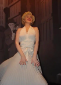
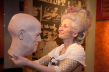
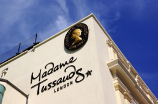
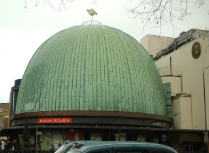
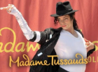
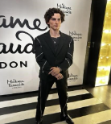
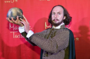
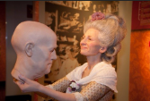
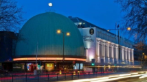
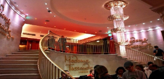

Madame Tussauds Museum for junior classes

Madame Tussauds Museum (French: Madame Tussauds) is a wax museum in the London district of Marylebone.
The museum was created by the sculptor Marie Tussaud (1761-1850).
Some halls




The "Party" and "Music" halls feature figures of famous singers, actors, and musicians from the past and present (Michael Jackson, Lady Gaga, Madonna, and others).
The "Film" and "Bollywood" halls feature figures from the history of world cinema (Audrey Hepburn, Marilyn Monroe, Steven Spielberg, and others).
The "Culture" hall features figures of prominent scientists and cultural figures (Albert Einstein, William Shakespeare, Pablo Picasso, and others).
The "Sport" hall features figures of prominent athletes from around the world.
The exhibition features figures of characters from the Marvel and Star Wars comic books and movies.
The hall dedicated to Sherlock Holmes features interactive tours of the literary character's world, taking visitors to famous locations in London.
Picture backgroundUpon entering the museum, visitors are greeted by Madame Tussaud herself, a self-portrait created by the master.
Some stages of history
Madame Tussauds Museum (French: Madame Tussauds) is a wax museum in the London borough of Marylebone.
It has branches in 23 other cities. The most famous ones are in Amsterdam, Vienna, Berlin, Singapore, New York, and Hong Kong.
The museum was created by the sculptor Marie Tussaud (1761-1850).
Some stages of history
In 1777, Marie Tussaud created her first wax figure, Voltaire, followed by Jean-Jacques Rousseau and Benjamin Franklin.
In 1802, Marie Tussaud moved to London, and due to the outbreak of the Anglo-French War, she and her collection were unable to return to France. For a time, Tussaud was forced to travel with her wax figures throughout the United Kingdom and Ireland.
In 1835, the first permanent exhibition was established on Baker Street in London.
In 1884, the collection moved to a new building on Marylebone Road.
In 1925, a fire destroyed many of the figures, but since the molds were intact, the figures were reconstructed.
The museum features wax figures of famous historical figures, as well as popular movie and television characters portrayed by famous actors.
Halls






The "Party" and "Music" halls feature figures of famous singers, actors, and musicians from the past and present (Michael Jackson, Lady Gaga, Madonna, and others).
The Film and Bollywood halls feature figures from the history of world cinema (Audrey Hepburn, Marilyn Monroe, Steven Spielberg, and others).
The Culture Hall features figures of prominent scientists and cultural figures (Albert Einstein, William Shakespeare, Pablo Picasso, and others).
The "Sport" hall features figures of the world's most prominent athletes.
The exhibition includes figures of Marvel and Star Wars comic book and movie characters.
The hall dedicated to Sherlock Holmes offers interactive tours of the literary character's world through famous locations in London.
Picture backgroundUpon entering the museum, visitors are greeted by Madame Tussaud's self-portrait, created by the master himself.
Madame Tussauds Museum offers different types of tickets, including the Fast Track option for quick entry through a separate entrance.